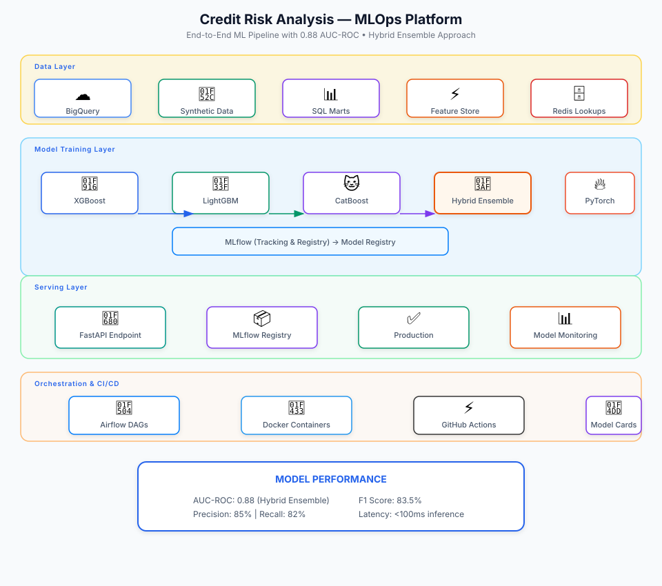

Model Performance
| Model | AUC-ROC | Gini | KS Statistic |
|---|---|---|---|
| XGBoost | 0.85 | 0.70 | 0.55 |
| LightGBM | 0.84 | 0.68 | 0.54 |
| CatBoost | 0.85 | 0.70 | 0.56 |
| TabTransformer | 0.86 | 0.72 | 0.57 |
| Hybrid Ensemble | 0.88 | 0.76 | 0.60 |
The Problem
Credit risk modeling requires not just accurate predictions but also production-grade infrastructure for model training, validation, deployment, and monitoring. Traditional ML projects often lack proper lifecycle management, leading to model drift, reproducibility issues, and deployment challenges.
The goal was to build a comprehensive ML platform that demonstrates production-grade practices including automated pipelines, experiment tracking, model governance, and scalable serving infrastructure.
Architecture
Hover or tap any component to see details

Implementation
- Advanced ML Models: Implemented XGBoost, LightGBM, CatBoost, and PyTorch neural networks including TabTransformer and Foundation-style embeddings
- Ensemble Methods: Built hybrid ensembles using stacking and weighting to achieve best-in-class performance (0.88 AUC-ROC)
- MLOps Pipeline: Automated end-to-end ML lifecycle with Airflow DAGs for data ingestion, feature engineering, training, validation, and deployment
- Experiment Tracking: Integrated MLflow for experiment tracking, model versioning, and registry management
- Model Serving: Deployed FastAPI microservice for real-time risk scoring with Redis for high-performance lookups
- Model Governance: Implemented monitoring, validation, drift detection, and explainability features
- Risk Metrics: Calculated Probability of Default (PD), Expected Loss (EL), PSI, CSI, Gini Coefficient, and KS Statistic
Key Design Decisions
- Chose ensemble approach over single models for better generalization and robustness
- Implemented synthetic data generation with BigQuery-compatible schemas for development and testing
- Used Redis for low-latency feature lookups in production serving
- Built modular pipeline architecture allowing easy addition of new models and features
Outcome
The platform achieves state-of-the-art performance (0.88 AUC-ROC) while maintaining production-grade MLOps practices. The automated pipeline ensures reproducibility, and the monitoring framework enables proactive model maintenance.
This project demonstrates the full ML engineering lifecycle from data to deployment, making it suitable for production credit risk assessment systems.